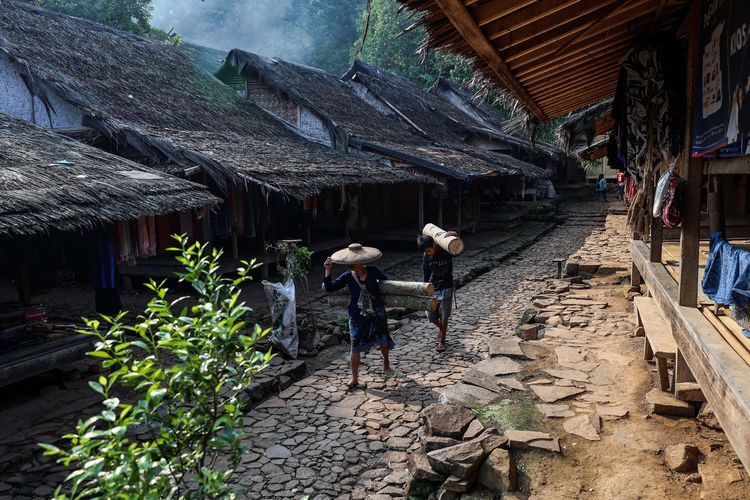

Suku Baduy

Masyarakat Baduy dengan tekun berusaha untuk mempertahankan cara hidup tradisional yang dianut oleh nenek moyang mereka.
Dua prinsip utama yang mereka anut adalah kepercayaan pada Tuhan yang tunggal, yang diyakini bermukim di pegunungan Kendeng,
serta menjaga hubungan harmonis antara manusia dan alam. Prinsip-prinsip hukum adat Baduy mengajarkan bahwa bukit tidak boleh
dihancurkan, lembah tidak boleh dirusak, apa yang telah ada sejak lama tidak boleh dipercepat, dan apa yang pendek seharusnya
tidak boleh diperpanjang. Berdasarkan prinsip-prinsip ini, masyarakat Baduy melarang pengolahan kembali tanah yang telah digunakan
untuk pertanian, termasuk melarang budidaya padi di sawah. Mereka juga tidak menggunakan bahan-bahan anorganik dalam
kehidupan sehari-hari. Dalam upaya menjaga kelestarian alam, rumah-rumah mereka dibangun dengan menggunakan sistem panggung,
di mana batu-batu menopang struktur rumah mereka. Masyarakat Baduy memiliki sejumlah larangan yang sangat dijunjung tinggi,
seperti larangan menggunakan sandal atau sepatu, memelihara hewan, membawa barang dengan alat transportasi modern,
menggunakan listrik, dan masih banyak lagi. Semua larangan ini bertujuan untuk menjaga harmoni dengan hutan dan sungai serta
menghindari kerusakan alam.
Masyarakat Baduy terbagi menjadi dua kelompok utama, yaitu Baduy Dalam dan Baduy Luar. Baduy Dalam terdiri dari sekitar
1.150 orang yang tinggal di kampung Tangtu Telu, Desa Cibeo, Cikertawana, dan Cikeusik. Baduy Dalam sangat memegang teguh prinsip-
prinsip nenek moyang mereka dan menjalani kehidupan dengan cara tradisional. Masyarakat Baduy Dalam dianggap sebagai pelindung
keseimbangan alam karena mereka merawat hutan, sungai, dan gunung-gunung di sekitar mereka, sehingga manusia dapat hidup secara
harmonis dengan alam.
Sebaliknya, Baduy Luar memiliki hubungan yang lebih terbuka dengan dunia luar. Meskipun mereka juga mengenakan pakaian
tradisional, mereka tinggal di sekitar 40 desa penyangga yang bertujuan melindungi kesucian Baduy Dalam dari pengaruh luar.
Baduy Luar terlibat dengan dunia luar namun tetap berusaha menjaga kemurnian dan keaslian Baduy Dalam.